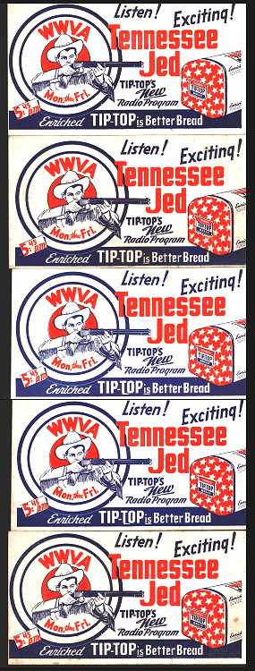

Cold iron shackles and a ball and chain
Listen to the whistle of the evening train
You know you bound to wind up dead
if you don't head back to Tennessee, Jed
Rich man step on my poor head
When you get up you better butter my bread
Well you know it's like I said
You better head back to Tennessee, Jed
Tennessee, Tennessee
There ain't no place I'd rather be
Baby won't you carry me
Back to Tennessee
Drink all day and rock all night
Law come to get you if you don't walk right
Got a letter this morning and all it read:
You better head back to Tennessee, Jed
I dropped four flights and cracked my spine
Honey come quick with the iodine
Catch a few winks down under the bed
Then head back to Tennessee, Jed
Tennessee, Tennessee
There ain't no place I'd rather be
Baby won't you carry me
Back to Tennessee
I ran into Charley Phogg
He blacked my eye and he kicked my dog
My dog he turned to me and he said
Let's head back to Tennessee, Jed
I woke up a feeling mean
Went down to play the slot machine
The wheels turned round and the letters read
Better head back to Tennessee, Jed
Tennessee, Tennessee
Ain't no place I'd rather be
Baby won't you carry me
Back to Tennessee
Recorded on
First performance: October 19, 1971 at Northrop Auditorium, University of Minnesota, Minneapolis, Minnesota. "Tennessee Jed" appeared in the first set, following "Cumberland Blues" and preceding "Black Peter." Other firsts in the show, which was Keith Godchaux's first with the band, included "One More Saturday Night," "Jack Straw," "Comes a Time," and "Ramble On Rose." The song remained in the repertoire from then on.
The rhyme and rhythm pattern of "Tennessee Jed" are very similar to "Hallelujah, I'm a Bum".
Hunter, in Box of Rain, says
"'Tennessee Jed' originated in Barcelona, Spain. Topped up on vino tinto, I composed it aloud to the sound of a jaw harp twanged between echoing building faces by someone strolling half a block ahead of me in the late summer twilight."
It's also worth noting that the New Lost City Ramblers recorded a song called "Way Down the Old Plank Road," which refers to wearing a ball and chain, and wanting to get back to Tennessee. (New Lost City Ramblers Song Book, p. 218.)
Many thanks to Michael Ward, and to the Grateful Dead Hour, for bringing this to my attention.
Here's the item, a collection of five advertising cards/blotters, that was for sale:

This note from Alex Allan, creator of the "Grateful Dead Song and Lyric Finder" website:
-----Original Message----- From: Alex Allan [mailto:alex@whitegum.com]
Sent: Tuesday, April 15, 2003 7:21 PM
Subject: Tennessee Jed
David
Tennessee Jed was a character in a Western radio show. [This corrects earlier info I had posted to the effect that he was a DJ]. See for example: http://www.radiogoldindex.com/cgi-local/p2.cgi?ProgramName=Tennessee+JedThere are some more images available at: http://jed.com/tennjedradio.htm
There are even some tapes available at http://www.people.memphis.edu/~mbensman/T-ZCatalog.html and http://www.sonic.net/~otrsteve/Frames_Version/Catalog_Alphabetical_HTML/T.html
Alex
Carry me back to old Virginia,
Back to my Clinch mountain home
Carry me back to old Virginia,
Back to my old mountain home.